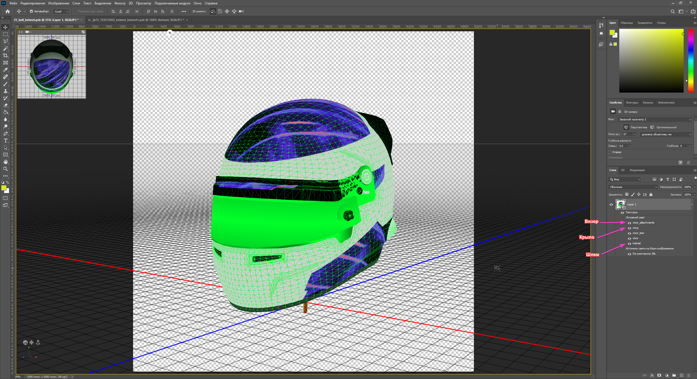
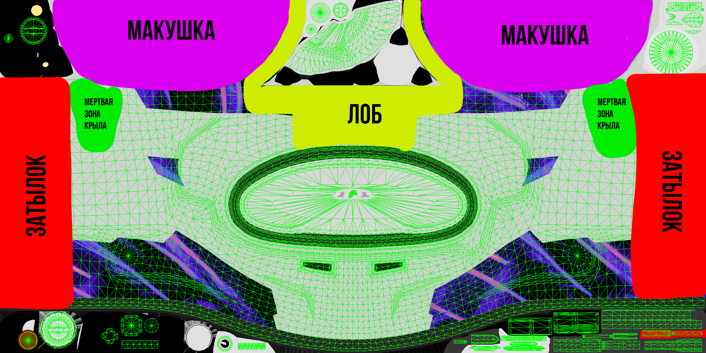
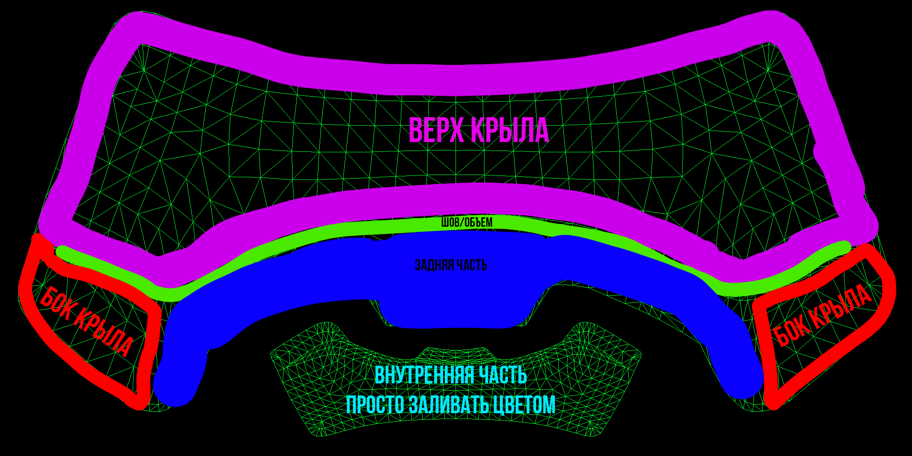
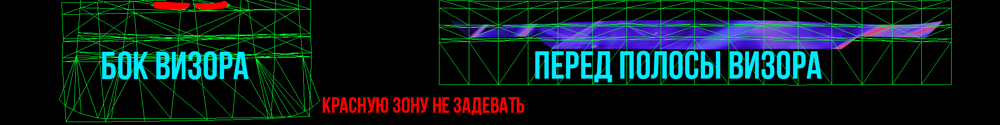

Создание шлема для F1 25/26
Здесь находится основной гайд, от подготовки до экспорта. Также указаны советы и прикреплены скриншоты для пояснения
Подготовка
Нам понадобится:
Photoshop 2021 версии 22.2 и ниже, так как в последующих версиях 3d редактор убрали.
База для шлема от jburon72 (24_career - 25_bell_Helmets)
Базовые навыки работы в редакторе
Дополнение для самой игры F1: The Movie, т.к. оно дает шлемы которые проще всего заменить. Возможно у вас Iconic издание игры, тогда The Movie вам не понадобится, но в гайде будет описана работа именно с ним
Подготовьте также материалы, чтобы придумать дизайн. Это может быть рисунок/распечатка, цифровой рисунок или что то, что вам удобней использовать
Как и в любом незнакомом деле будьте внимательны, и помните что с первой попытки может что-то может не получиться. Любой навык приходит с опытом.
Основы
Здесь я на примере развертки текстур покажу, какая примерная область на UV развертке соответствует области на шлеме/крыле/визоре.
Советую брать версию базы 25_bell_helmet.psb
В каждой текстуре есть слой wf, который показывает рабочую зону, где будут видны элементы шлема. Все что за границей видно не будет, соответственно может что то обрезаться. Так что советую самим поэксперементировать и посмотреть




Цвета
Придумайте основную палитру для вашего шлема, учитывайте что в игре цвета отображаются бледнее или вообще с другим оттенком. Вы можете добавить ее отдельным слоем в редакторе или просто записать HEX коды этих цветов
Основной дизайн
Здесь размести информацию о создании основной графики.
Создание дизайна
Твой текст...
Перенос в редактор
Твой текст...
Карта материалов
Опиши здесь создание карты материалов
Твой совет по размещению логотипов.
Экспорт
Здесь размести инструкции по подготовке готового файла и его переносу в F1 25.
Здесь можно указать важный момент, который легко пропустить.